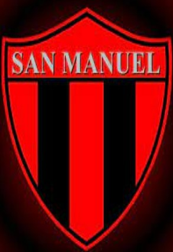
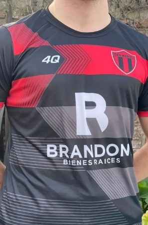

SAN MANUEL Fútbol y algo más
NOTICIAS DEL SANTO
Página dedicada al equipo que representa al pueblo de San Manuel en la Liga Universitaria del Interior, para que toda la gente de la localidad se entere de todo lo relacionado al equipo que los representa
Solidaridad rojinegra
Les queremos contar que el sábado fuimos al Comedor Rayito de Sol a llevar las donaciones que nos hicieron llegar al equipo, y gracias a la ayuda de todos/as pudimos llenar dos autos de mercadería, ropa y juguetes. Queremos agradecerles a todas las personas por ayudarnos ser parte de esto y poder dar una mano desde el lugar que cada uno/a ha podido.

Presentación de nuestro manto sagrado
Con mucho gusto y alegria queremos presentarle nuestra nueva vestimenta, la nueva piel rojinegra que el equipo va a llevar y defender con orgullo. Les agradecemos a todas las personas y sponsors que nos dieron una mano para poder vestir una de las mejores casacas que ha tenido el equipo.
Vuelven los domingos de fútbol
El conjunto masculino vuelve a la piel rojinegra para escribir una página más en la historia de Sanma. Una zona que se supo conquistar allá por el 2013 los pone otra vez a prueba, contra viejos y conocidos rivales, obligándolos a poner toda la garra y compromiso para concretar el objetivo principal: volver a la Primera Categoría